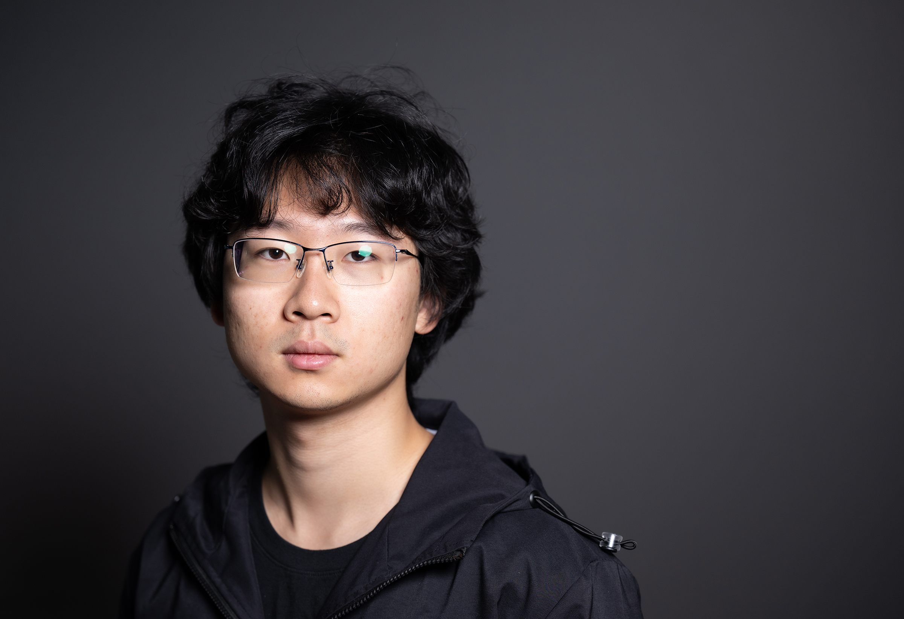
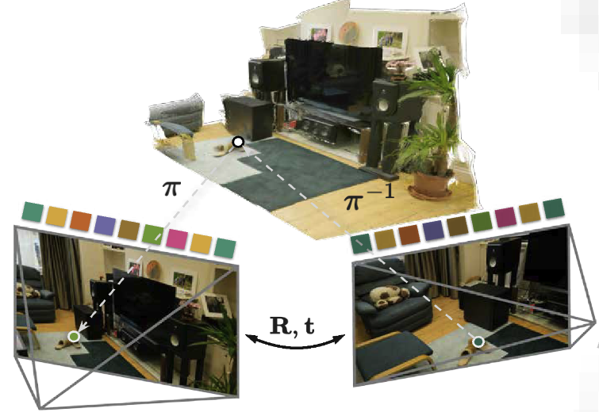
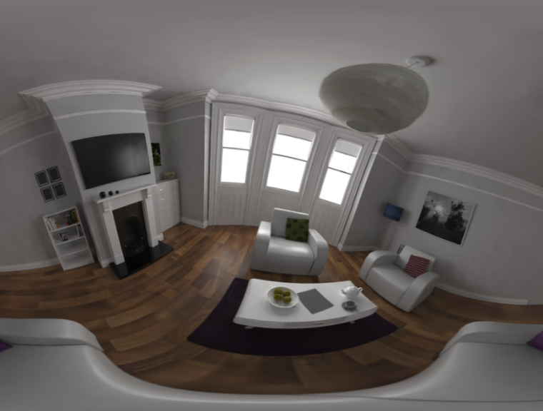
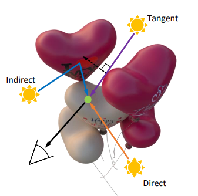

Building something new in stealth mode. PhD student at Cornell working with Steve Marschner. Bachelor's from Wuhan University.



Conference Reviewer: SIGGRAPH, SIGGRAPH Asia, CVPR, ECCV, ICCV
I love basketball 🏀, ski ⛷️, and travel 🚗. Drove across the whole country (almost) with my friend Flash. Check out the map!